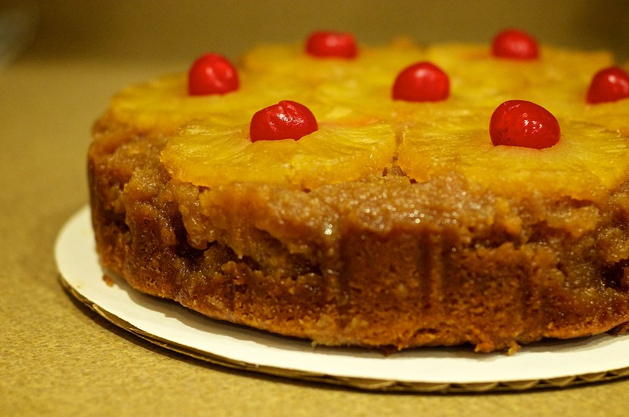

The Ultimate Pineapple Cake

The cake I'll be eating on my deathbed
This upside down pineapple cake has everything you would want from a cake and more.
Its soft interior and mouth-watering caramel make it impossible to resist.
I always go for a second, third or even fourth slice and after trying my recipe, I bet you will too!
Ingredients
- a small fresh pineapple
- 3/4 cup brown sugar
- 1 1/2 cup caster sugar
- 3 large eggs
- 200 g room-temperature butter
- 3/4 cup buttermilk
- 3 cups all purpose flour
- ground nutmeg, allspice, and cinnamon to taste
- 1 teaspoon vanilla extract
- zest of a small lemon
- 1 tablespoon baking powder
Instructions
- Start by adding 1 cup of caster sugar to a heavy-bottomed pan over medium-low heat.
Once the sugar has fully melted, add 1/2 cup of hot water to the pan and cook it well
until all the sugar has melted and the caramel starts to thicken.
Pour it over your cake mold, reserve.
- Once your caramel has cooled down a bit you can add your pineapple slices.
- Now add your softened butter to a bowl along with the remaining sugar, lemon zests
and the vanilla extract. Mix it well until it becomes airy. Then proceede to add your eggs,
one at a time.
- Mix the flour with the baking powder, and the ground spices.
- Now add both the flour mixture and the buttermilk to your butter-sugar mixture,
in parts, alternating between the two.
- Slowly pour the batter into the mold and bake for 45 min at 180°C,
or until a toothpick inserted into the center comes out with only
moist crumbs.
- Enjoy!
You can check my other recipes here Home